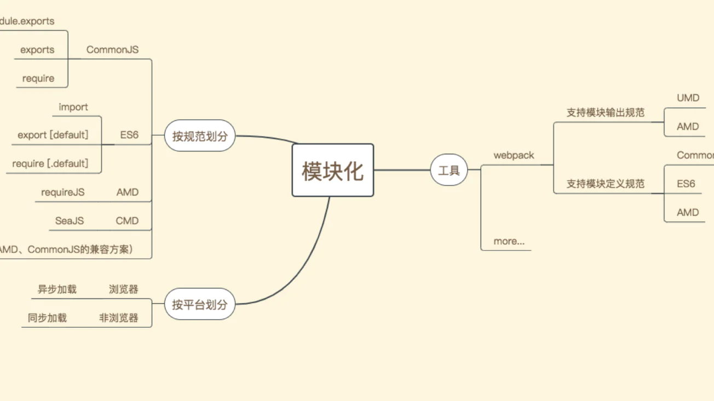

讲解模块化的发展史

模块化的演进过程
- Stage1 - 文件划分方式：根据功能、数据状态存放到不同的文件
缺点：
- 模块直接在全局工作，大量模块成员污染全局作用域
- 没有私有空间，所有模块内的成员都可以在模块外部被访问或者修改
- 一旦模块增多，容易产生命名冲突
- 无法管理模块之间的依赖关系
- 在维护的过程中很难分辨每个成员所属的模块
- Stage2 - 命名空间方式：每个文件暴露出来是一个全局对象
解决命名冲突的问题，但其他问题依旧存在
- Stage3 - IIFE：每个模块的成员放到立即执行函数中，带来私有作用域概念，通过闭包访问
解决了命名冲突的问题
- Stage4 - IIFE 依赖参数：通过参数明显表面这个模块的依赖
模块加载问题：不受代码控制
理想的方式
在页面中引入一个 JS 入口文件，其余用到的模块可以通过代码控制，按需加载
模块化规范的出现
两点需求：
- 一个统一的模块化标准规范
- 一个可以自动加载模块的基础库
- 是 Node.js 中所遵循的模块规范
- 约定一个文件就是一个模块，每个模块都有单独的作用域
- 通过 module.exports 导出成员，再通过 require 函数载入模块
- 以同步的方式加载模块（加载页面较慢），Node.js 是启动的时候加载模块（执行中再去使用模块）
- 每个模块都通过 define 去定义
define(['jquery', './module2.js'], function ($, module2) {
return {
start: function () {
$('body').animate({ margin: '200px' })
module2()
}
}
})
- 在 Node.js 环境中，遵循 CommonJS 规范来组织模块
- 在浏览器环境中，遵循 ES Modules 规范
ES Modules 已发展成为现今最主流的前端模块化标准
模块打包工具的出现
- ES Modules 本身存在环境兼容问题
- 模块化的方式划分出来的模块文件过多，而前端应用又运行在浏览器中，导致频繁发送网络请求
- 不仅仅 JS 代码需要模块化，HTML、CSS 也面临需要模块化的问题
针对问题1、2，gulp和插件、编译工具即可
但是问题3，webpck可
几种模块化规范对比
AMD、CMD 两大规范
| 规范 | 约束条件 | 代表作 |
|---|---|---|
| AMD | 依赖前置 | requirejs |
| CMD | 就近依赖 | seajs |
AMD、CMD 提供了封装模块的方法，实现语法上相近，甚至于 requirejs 在后期也默默支持了 CMD 的写法。
AMD、CMD差异：依赖前置和就近依赖。
AMD和require.js这里介绍用require.js实现AMD规范的模块化：用require.config()指定引用路径等，用define()定义模块，用require()加载模块。
首先我们需要引入require.js文件和一个入口文件main.js。main.js中配置require.config()并规定项目中用到的基础模块。
/** 网页中引入require.js及main.js **/
<script src="js/require.js" data-main="js/main"></script>
/** main.js 入口文件/主模块 **/
// 首先用config()指定各模块路径和引用名
require.config({
baseUrl: "js/lib",
paths: {
"jquery": "jquery.min", //实际路径为js/lib/jquery.min.js
"underscore": "underscore.min",
}
});
// 执行基本操作
require(["jquery","underscore"],function($,_){
// some code here
});
引用模块的时候，我们将模块名放在[]中作为reqiure()的第一参数；如果我们定义的模块本身也依赖其他模块,那就需要将它们放在[]中作为define()的第一参数。
// 定义math.js模块
define(function () {
var basicNum = 0;
var add = function (x, y) {
return x + y;
};
return {
add: add,
basicNum :basicNum
};
});
// 定义一个依赖underscore.js的模块
define(['underscore'],function(_){
var classify = function(list){
_.countBy(list,function(num){
return num > 30 ? 'old' : 'young';
})
};
return {
classify :classify
};
})
// 引用模块，将模块放在[]内
require(['jquery', 'math'],function($, math){
var sum = math.add(10,20);
$("#sum").html(sum);
});
CMD是另一种js模块化方案，推崇依赖就近、延迟执行。
/** AMD写法 **/
define(["a", "b", "c", "d", "e", "f"], function(a, b, c, d, e, f) {
// 等于在最前面声明并初始化了要用到的所有模块
a.doSomething();
if (false) {
// 即便没用到某个模块 b，但 b 还是提前执行了
b.doSomething()
}
});
/** CMD写法 **/
define(function(require, exports, module) {
var a = require('./a'); //在需要时申明
a.doSomething();
if (false) {
var b = require('./b');
b.doSomething();
}
});
/** sea.js **/
// 定义模块 math.js
define(function(require, exports, module) {
var $ = require('jquery.js');
var add = function(a,b){
return a+b;
}
exports.add = add;
});
// 加载模块
seajs.use(['math.js'], function(math){
var sum = math.add(1+2);
});
CommonJS
CommonJS 定义了，一个文件就是一个模块。在 node.js 的实现中，也给每个文件赋予了一个 module 对象，这个对象包括了描述当前模块的所有信息，我们尝试打印 module 对象。
// index.js
console.log(module);
// 输出
{
id: '/Users/x/Documents/code/demo/index.js',
exports: {},
parent: { module }, // 调用该模块的模块，可以根据该属性查找调用链
filename: '/Users/x/Documents/code/demo/index.js',
loaded: false,
children: [...],
paths: [...]
}
commonJS用同步的方式加载模块。在服务端，模块文件都存在本地磁盘，读取非常快，所以这样做不会有问题。但是在浏览器端，限于网络原因，更合理的方案是使用异步加载。
在 CommonJS 里面，模块是用对象来表示。通过“循环加载”的例子理解下
// a.js
exports.x = 'a1';
console.log('a.js ', require('./b.js').x);
exports.x = 'a2';
//b.js
exports.x = 'b1';
console.log('b.js ', require('./a.js').x);
exports.x = 'b2';
//main
console.log('index.js', require('./a.js').x);
// 输出
b.js a1
a.js b2
index.js a2
根据模块对象，进行如下分析
1、 a.js准备加载，在内存中生成module对象moduleA
2、 a.js执行exports.x = 'a1'; 在moduleA的exports属性中添加x
3、 a.js执行console.log('a.js', require('./b.js').x); 检测到require关键字，开始加载b.js，a.js执行暂停
4、 b.js准备加载，在内存中生成module对象moduleB
5、 b.js执行exports.x = 'b1'; 在moduleB的exports属性中添加x
6、 b.js执行console.log('b.js', require('./a.js').x); 检测到require关键字，开始加载a.js，b.js执行暂停
7、 检测到内存中存在a.js的module对象moduleA，于是可以将第6步看成console.log('b.js', moduleA.x); 在第二步中moduleA.x赋值为a1，于是输出b.js, a1
8、 b.js继续执行，exports.x = 'b2'，改写moduleBexports的x属性
9、 b.js执行完成，回到a.js，此时同理可以将第3步看成console.log('a.js', modulerB.x); 输出了a.js, b2
10、 a.js继续执行，改写exports.x = 'a2'
11、 输出index.js a2
例子里面还出现了一个保留字 exports。其实 exports 是指向 module.exports 的一个引用:
const myFuns = { a: 1 };
let moduleExports = myFuns;
let myExports = moduleExports;
// moduleExports 重新指向
moduleExports = { b: 2 };
console.log(myExports);
// 输出 {a : 1}
// 也就是说在module.exports被重新复制时，exports与它的关系就gg了。解决方法就是重新指向
myExports = modulerExports;
console.log(myExports);
// 输出 { b: 2 }
ES6 module
web 前端模块化在 ES6 之前，并不是语言规范，不像是其他语言 java、php 等存在命名空间或者包的概念。上文提及的 AMD、CMD、CommonJS 规范，都是为了基于规范实现的模块化，并非 JavaScript 语法上的支持。
ES6 模块化写法：
// a.js
export const a = 1;
// b.js
export const b = 2;
// main
import { a } from './a.js';
import { b } from './b.js';
console.log(a, b);
//输出 1 2
从保留字对比 ES6 和 CommonJS
| 保留字 | CommonJS | ES6 |
|---|---|---|
| require | 支持 | 支持 |
| export / import | 不支持 | 支持 |
| exports / module.exports | 支持 | 不支持 |
除了 require 两个都可以用之外，其他实际上还是有明显差别的。那这两个在 require 使用上，有差异吗？
ES6 module 和 CommonJS 之间的差异| 模块输出 | 加载方式 | |
|---|---|---|
| CommonJS | 值拷贝 | 对象 |
| ES6 | 引用（符号链接） | 静态解析 |
值拷贝和引用的区别：
// 值拷贝 vs 引用
// CommonJS
let a = 1;
exports.a = a;
exports.add = () => {
a++;
};
const { add, a } = require('./a.js');
add();
console.log(a); // 1
// ES6
export const a = 1;
export const add = () => {
a++;
};
import { a, add } from './a.js';
add();
console.log(a); // 2
// 显而易见CommonJS和ES6之间，值拷贝和引用的区别吧。
ES6的模块不是对象，import命令会被 JavaScript 引擎静态分析，在编译时就引入模块代码，而不是在代码运行时加载，所以无法实现条件加载。也正因为这个，使得静态分析成为可能。
区别于 CommonJS 的模块实现，ES6 的模块并不是一个对象，而只是代码集合。也就是说，ES6 不需要和 CommonJS 一样，需要把整个文件加载进去，形成一个对象之后，才能知道自己有什么，而是在编写代码的过程中，代码是什么，它就是什么。
PS:- 目前各个浏览器、node.js 端对 ES6 的模块化支持实际上并不友好。
- 在 ES6 中使用 require 字样，静态解析的能力将会丢失
ES6 模块与 CommonJS 模块的差异
CommonJS 模块输出的是一个值的拷贝，ES6 模块输出的是值的引用
- CommonJS 模块输出的是值的拷贝，也就是说，一旦输出一个值，模块内部的变化就影响不到这个值。
- ES6 模块的运行机制与 CommonJS 不一样。JS 引擎对脚本静态分析的时候，遇到模块加载命令
import，就会生成一个只读引用。等到脚本真正执行时，再根据这个只读引用，到被加载的那个模块里面去取值。换句话说，ES6 的import有点像 Unix 系统的“符号连接”，原始值变了，import加载的值也会跟着变。因此，ES6 模块是动态引用，并且不会缓存值，模块里面的变量绑定其所在的模块。
CommonJS 模块是运行时加载，ES6 模块是编译时输出接口
- 运行时加载: CommonJS 模块就是对象；即在输入时是先加载整个模块，生成一个对象，然后再从这个对象上面读取方法，这种加载称为“运行时加载”。
- 编译时加载: ES6 模块不是对象，而是通过 export 命令显式指定输出的代码，import时采用静态命令的形式。即在import时可以指定加载某个输出值，而不是加载整个模块，这种加载称为“编译时加载”。
CommonJS 加载的是一个对象（即module.exports属性），该对象只有在脚本运行完才会生成。而 ES6 模块不是对象，它的对外接口只是一种静态定义，在代码静态解析阶段就会生成。